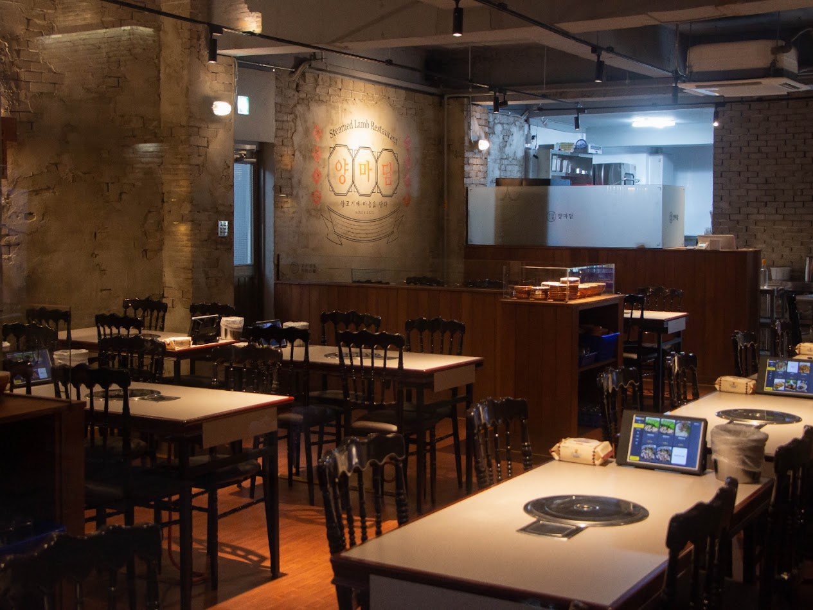
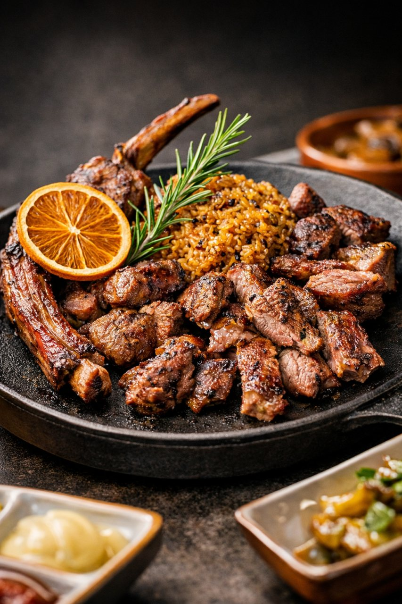
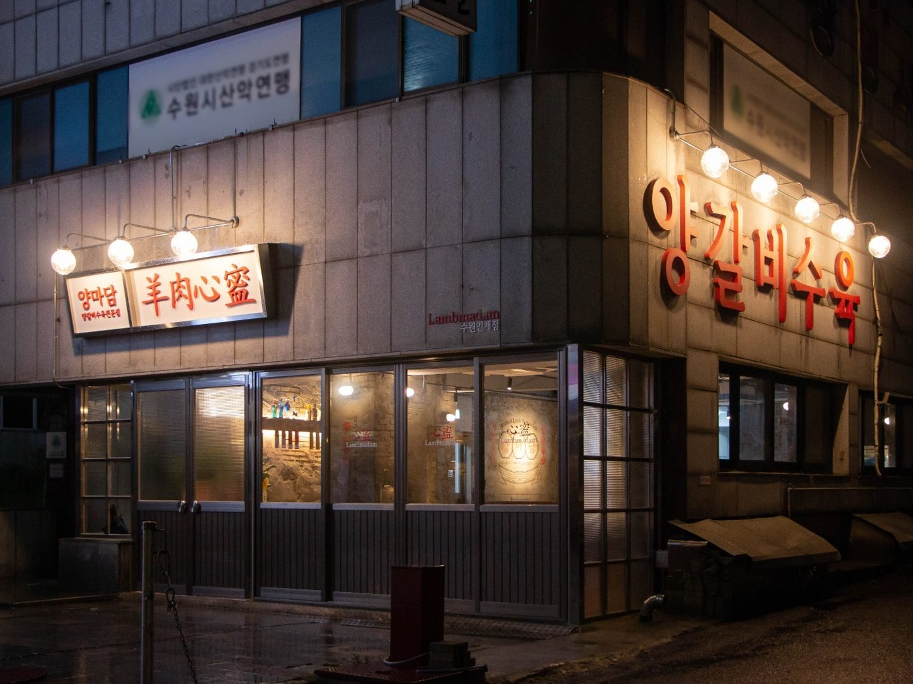
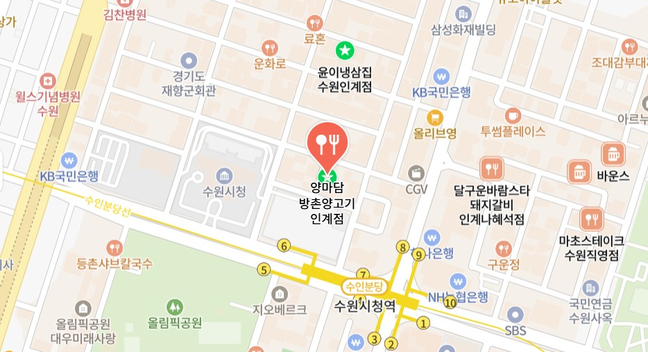
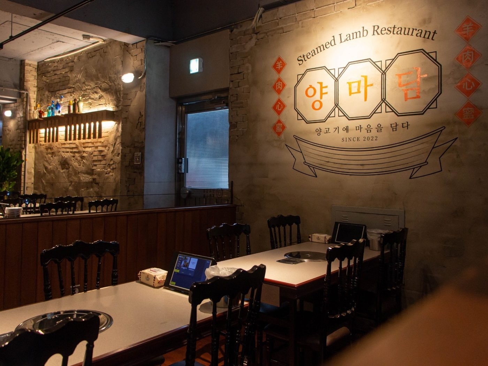

직접 굽지 않아 대화가 끊기지 않습니다
주요 구이 메뉴는 매장에서 조리한 뒤 제공합니다. 누군가 계속 고기를 굽고 뒤집느라 대화에서 빠질 필요 없이 함께 식사를 즐기기 좋습니다.
GROUP DINING
수원시청역 인근에서 회식이나 단체모임 장소를 찾고 계신가요?
양마담 방촌양고기 인계점은 주요 메뉴를 조리해 제공해 직접 고기를 굽는 부담을 줄이고, 여러 명이 함께하기 좋은 좌석과 주차 공간을 갖춘 양고기 전문점입니다.
회사 회식부터 가족·지인 모임까지, 음식 준비보다 함께하는 시간과 대화에 집중해보세요.

WHY YANGMADAM
여러 사람이 함께하는 자리에서는 음식의 맛만큼 식사하기 편한 환경도 중요합니다. 양마담은 회식과 모임에서 자주 불편하게 느끼는 부분을 줄였습니다.
주요 구이 메뉴는 매장에서 조리한 뒤 제공합니다. 누군가 계속 고기를 굽고 뒤집느라 대화에서 빠질 필요 없이 함께 식사를 즐기기 좋습니다.
회사 회식, 부서모임, 가족모임, 친구·지인 모임을 예약할 수 있습니다. 이용 가능한 좌석은 날짜와 예약 상황에 따라 달라집니다.
매장 측면과 전면에 주차 공간이 마련되어 있어 여러 명이 차량으로 이동하는 모임에도 편리합니다.
양갈비수육, 숄더랙구이, 양갈비바베큐, 얼큰양전골을 한 자리에서 즐길 수 있습니다. 양갈비수육은 양마담의 시그니처 메뉴입니다.
COMFORTABLE DINING
양마담은 주요 구이 메뉴를 조리해 제공하기 때문에 손님이 테이블에서 직접 고기를 굽지 않아도 됩니다.
보통 고깃집 회식에서는 누군가가 계속 고기를 굽거나 익은 고기를 챙겨야 하는 경우가 많습니다.
양마담은 이러한 부담을 줄여 식사와 대화에 자연스럽게 집중할 수 있는 방식을 중심으로 운영합니다. 완성된 요리를 함께 나누어 먹으며 조금 더 편안한 회식과 모임을 즐겨보세요.

CAPACITY
양마담 방촌양고기 인계점은 총 48석 규모입니다.
다만 48석이라는 것은 매장 전체 좌석 수이며, 한 팀이 이용할 수 있는 인원은 방문 날짜와 시간, 다른 예약 상황에 따라 달라질 수 있습니다.
인원이 많은 회식이나 단체모임은 미리 전화 또는 네이버 예약을 통해 문의해 주세요. 가능한 좌석과 예약 방법을 안내해 드립니다.
PARKING
회식이나 가족모임처럼 여러 사람이 각자 차량으로 이동할 때는 주차 가능 여부가 식당 선택에 중요한 조건이 됩니다.
차량으로 방문하는 일행이 많다면 방문 전에 주차 위치를 확인해 주세요. 수원시청역에서 도보로 방문할 수 있어 차량 이용자와 대중교통 이용자가 함께 모이기 편합니다.

MENU GUIDE
여러 명이 함께 방문한다면 한 가지 메뉴보다는 서로 다른 양고기 요리를 함께 즐기는 구성을 추천합니다.
SIGNATURE
양갈비수육은 일반적인 양갈비 구이와는 다른 방식으로 즐기는 양마담의 대표 메뉴입니다.
부드럽게 익힌 양고기를 따뜻하게 즐길 수 있어 구이 메뉴와 함께 주문하면 서로 다른 식감과 맛을 경험할 수 있습니다.
양고기를 좋아하지만 늘 비슷한 구이 메뉴만 먹어봤다면, 모임 자리에서 조금 특별한 메뉴를 함께 즐겨보세요.
OCCASIONS
누군가 계속 고기를 굽지 않아도 되어 함께 이야기하며 식사하기 좋습니다.
여러 메뉴를 가운데 놓고 함께 나누어 먹기 좋은 구성입니다.
주차가 가능하고 주요 메뉴가 조리되어 제공돼 부모님과 함께하는 식사에도 편리합니다.
평범한 고깃집과 조금 다른 메뉴를 찾는 모임에 어울립니다.
식사를 하면서 충분히 이야기를 나눌 수 있는 자리를 찾는 분들에게 추천합니다.
LOCATION
양마담 방촌양고기 인계점은 수원시청역 6번 출구에서 도보 약 3분 거리에 있습니다. 차량 방문 시 매장 측면과 전면 주차 공간을 이용할 수 있습니다.

RESERVATION
단체모임은 네이버 예약 또는 전화 문의를 통해 예약할 수 있습니다.
예약할 때 방문 날짜와 시간, 예상 인원을 알려주시면 좌석 상황을 확인하기 편합니다. 인원이 많은 모임은 원하는 날짜에 좌석을 확보할 수 있도록 미리 문의하시는 것을 권장합니다.

FAQ
네. 양마담 방촌양고기 인계점은 단체예약이 가능하며 총 48석 규모로 운영됩니다. 인원과 날짜에 따라 이용 가능한 좌석이 달라질 수 있으므로 단체모임은 사전예약을 권장합니다.
아니요. 주요 구이 메뉴를 매장에서 조리한 뒤 제공하기 때문에 손님이 테이블에서 직접 고기를 굽지 않아도 됩니다.
네. 매장 측면 최대 12대와 전면 약 3대의 주차 공간을 이용할 수 있습니다.
수원시청역 6번 출구에서 도보 약 3분 거리입니다.
처음 방문하신다면 양갈비수육, 숄더랙구이, 양갈비바베큐 등 대표 메뉴를 함께 주문해 다양한 양고기 요리를 즐기는 구성을 추천합니다.
양고기가 처음이라면 직원에게 메뉴 추천을 요청해 주세요. 여러 조리 방식의 메뉴가 있어 취향에 맞게 선택할 수 있으며 주요 메뉴는 조리해 제공됩니다.
날짜와 좌석 상황에 따라 가능 여부가 달라질 수 있습니다. 인원이 많은 모임은 미리 전화로 문의해 주세요.
네. 네이버 예약을 통해 방문 예약을 할 수 있습니다.
RESERVATION
주요 메뉴는 편하게 즐기고, 함께하는 사람들과의 대화에 조금 더 집중해보세요.
수원시청역 가까이, 주차 가능한 48석 양고기 전문점 양마담에서 모임을 준비해보세요.